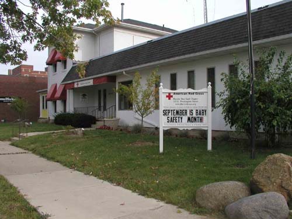
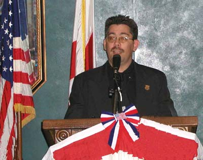
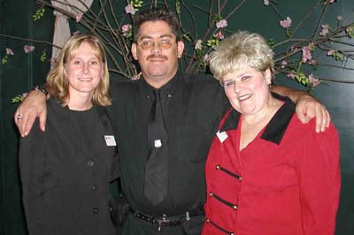
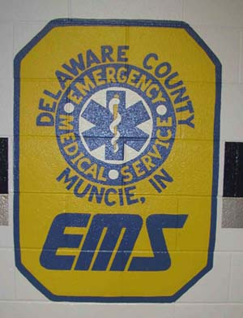
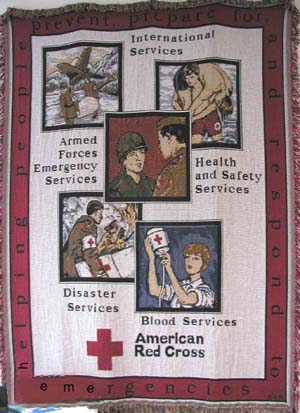
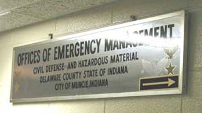
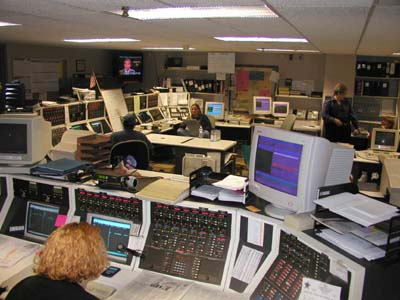

Emergency Medical RESCUE Of NYC
NYC's First Volunteer BLS-D First Response Unit

Emergency Medical Rescue's CEO, Martin Grillo, was invited to be keynote speaker at the 85th Anniversary - Volunteer Recognition Dinner at Hoosier Heartland Chapter of the American National Red Cross, in Muncie, Indiana, on September 26, 2002. Mr. Grillo spoke about his personal experiences at September 11th at the World Trade Center in New York City, as well as those of the volunteers who gave of their time and themselves, assisting in a time of need.
 
Mr. Grillo speaking at the Recognition Dinner. And with Jen Killinger, Director of Volunteers, and Julie Hankins, Director of Emergency Services.
 
After the Dinner, Mr. Grillo was treated to a tour of the Muncie, Indiana, area Emergency Services,
as well as a tour of the City Of Muncie communications center.
 
Cars 4 Causes has partnered with Emergency
Medical Rescue of New York City.
Cars 4 Causes specializes in car donations and your donation through
Cars
4 Causes will help raise money for Emergency Medical Rescue of New York City.
Click the banner below to donate your car today!
Help Emergency Medical Rescue of New York City When You Search or Shop!
 |
 |